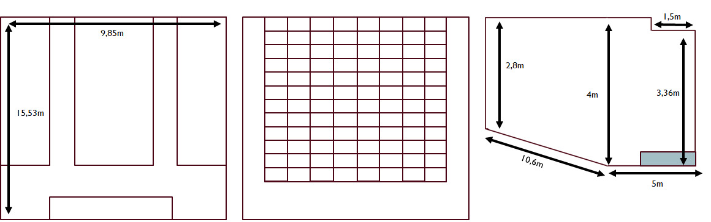
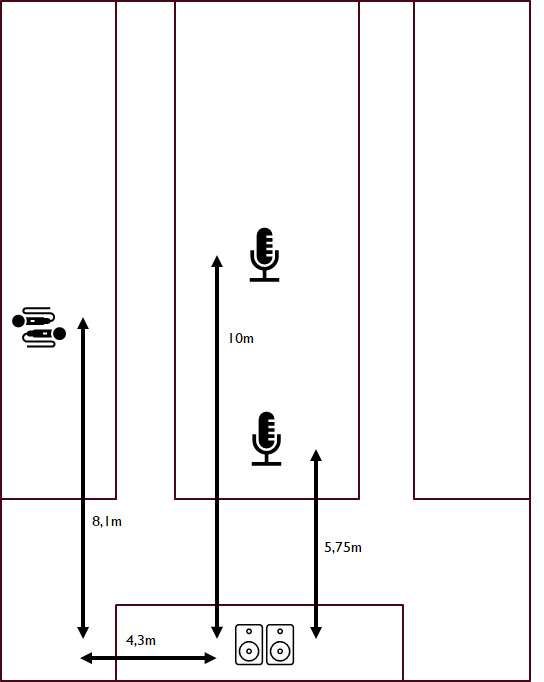
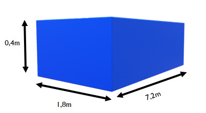
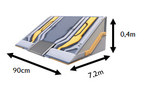
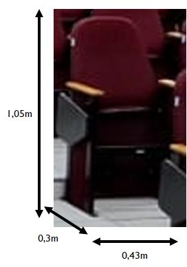

 
  
$Vtotal = AxLxC = 4.00 x 9.85 x 15.53 = 611.882m³$ $Vinclinação = AxLxC/2 = 1.2 x 9.85 x 10.53/2 = 62.2323m³$ $Vrecuoteto = AxLxC = 0.64 x 9.85 x 1.5 = 9.456m³$ $V(palco + rampa) = AxLxC + AxLxC/2 = 0.4 x 7.2 x 1.8 + 0.9 x 0.4 x 7.2 /2= 5.184 + 1.296 = 6.48m³$ $Vcadeiras =~ AxLxC122 = 1.050.30.43122 = 16.5249$ $Vtotal’ = 611.882 - 62.2323 - 9.456 - 6.48 - 16.5249 = 517.1888$